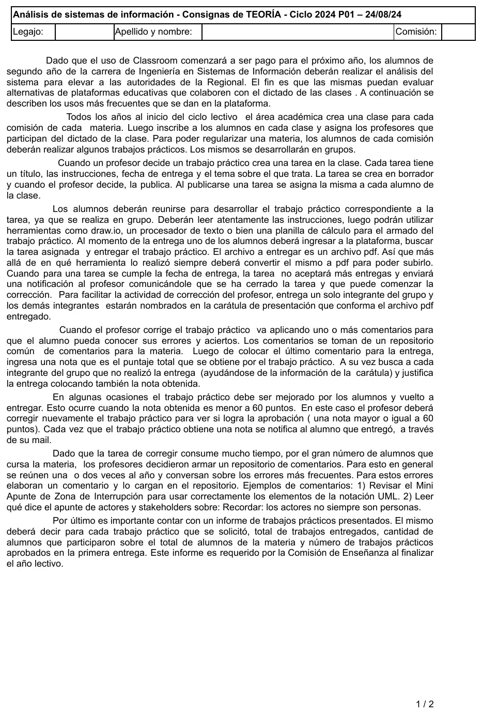
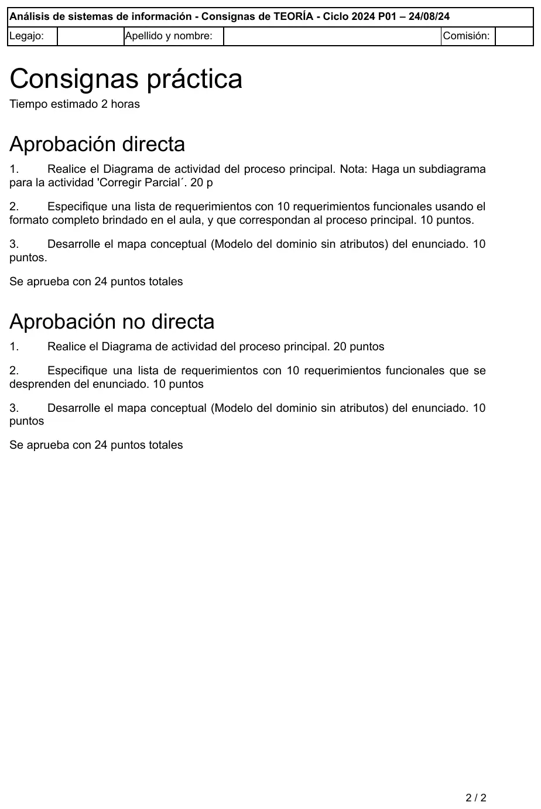

1° parcial, 24/08/2024
1° parcial, 24/08/2024
Enunciado




Propuesta de respuesta
Respuesta no verificada. La propuso Luta Studios con inteligencia artificial y ningún docente la revisó. Puede tener errores.
El enunciado pide el subdiagrama de «Corregir Parcial». En el relato lo que se corrige es el trabajo práctico, así que se tomó como «Corregir trabajo práctico».
1. Diagrama de actividad
El proceso principal va desde que el profesor crea la tarea hasta que el trabajo queda aprobado. Armar el repositorio de comentarios y el informe para la Comisión de Enseñanza son otros procesos y no van acá. Tocá el dibujo para verlo en pantalla completa.
2. Lista de requerimientos
Con la forma acción + objeto(s) + (para qué) + (para quién) + (comentarios imprescindibles).
| ID | Actor | Requerimiento |
|---|---|---|
R01 | Profesor | Registrar tarea en borrador con título, instrucciones, fecha de entrega y tema, para una clase |
R02 | Profesor | Registrar publicación de la tarea |
R03 | — | Generar asignación de la tarea publicada a cada alumno de la clase |
R04 | Alumno | Mostrar tareas asignadas, para buscar la que va a entregar |
R05 | Alumno | Validar que el archivo a entregar sea PDF, al momento de la entrega |
R06 | Alumno | Registrar entrega del trabajo práctico con su archivo PDF, por parte de un integrante del grupo |
R07 | Alumno | Validar que no se haya cumplido la fecha de entrega de la tarea, al registrar la entrega |
R08 | Profesor | Notificar cierre de la tarea, para que pueda comenzar la corrección (al cumplirse la fecha de entrega) |
R09 | Profesor | Mostrar comentarios del repositorio de la materia, para aplicarlos al corregir |
R10 | Profesor | Registrar comentarios aplicados y nota obtenida en la entrega |
R11 | Profesor | Registrar justificación de la entrega con la nota obtenida, para cada integrante del grupo que no entregó |
R12 | Alumno | Notificar nota obtenida al alumno que entregó, a través de su mail |
3. Mapa conceptual
Es el modelo del dominio sin atributos. La tarea se asigna a cada alumno con una clase asociativa, porque la nota y la justificación son de ese alumno con esa tarea. Las reentregas son varias entregas de la misma asignación. Tocá el dibujo para verlo en pantalla completa.
Respuesta no verificada. Puede tener errores.
Se armó con la página del 1° parcial (diagrama de actividad, subdiagramas, lista de requerimientos y mapa conceptual) y la del 2° parcial (modelo del dominio y clase asociativa). La forma sigue el diagrama del recuperatorio del 16/12/24 y los modelos del dominio del 02/11/24 y del 19/02/24.
Quedó en duda: «Corregir Parcial» se leyó como corregir el trabajo práctico. No está claro si la reentrega pasa de nuevo por el cierre de la tarea: acá vuelve directo a la corrección. Que la nota y la justificación vayan en una clase asociativa entre tarea y alumno es una decisión de modelado, y también se podría modelar el grupo como clase aunque el relato dice que solo figura en la carátula.
¿Cómo te fue?
Marcá cada tema del examen.
- Diagrama de actividadDiagrama de actividad, en 1° parcial
- SubdiagramaSubdiagramas y objetos, en 1° parcial
- RequerimientosRequerimientos, en 1° parcial
- Mapa conceptualMapa conceptual, en 1° parcial